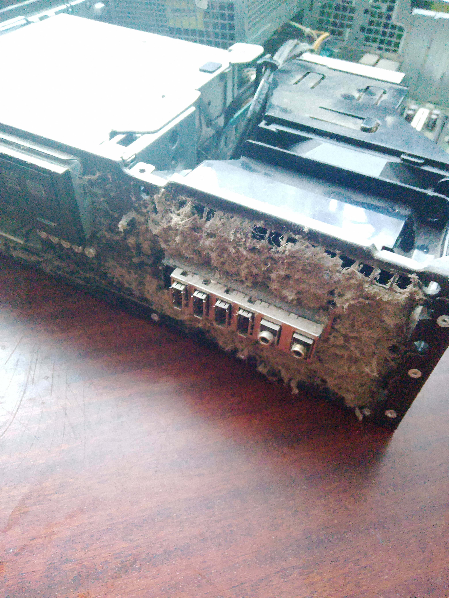
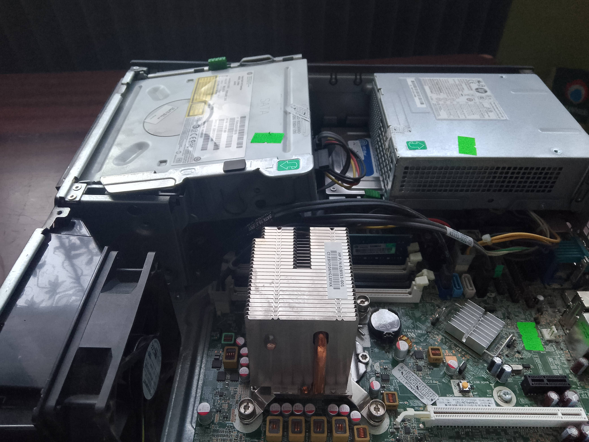

HP Compaq Elite 8200
Popularny biurowiec z 2011 który kupiłem w 2019 i używałem 6 lat. Nieco go ulepszyłem dodając RAM, karte graficzną i dysk SSD. Kąkuter nadaje się głównie do obsługi internetu i gier retro, podobno da się na tym uruchomić GTA V. Świetnie jednak się sprawdzi do bardzo zaawansowanego symulatora Aurora 4x. Poniżej specyfikacje i obserwacje:
- Wady:
- Płyta główna czasami wyłącza wejścia USB aby oszczędzać prąd. Naprawa często wymaga resetu i jest irytująca.
- Karta graficzna lub cały komputer obsługuje tylko wejście VGA, korzystanie z nowszych monitorów jest ograniczone bez przejściówki
- Taktowanie RAM to tylko do 1333 Mhz przez różne moduły, jeśli wszystkie gniazda nie są wypełnione, tryb Dual-Chanell nie działa. Teoretycznie jest 16 GB ale po osiągnięciu 12GB potrafi wywalić niebieskie ekran.
- Zasilacz jest zakurzony i trudno go rozkręcić. Przez brak certyfikatu osiąga sprawność 70% ale raczej nie wybuchnie. Nie nadaje się natomiast na serwer.
- DVD może się zacinać mimo że działa sprawnie.
- W przypadku dysku Hitachi Linuks powinien uruchamiać się minute. Jest to adekwatny dysk do reszty konstrukcji, choć dowolny SSD robi poprawe. Dysku M2 nie da się zamontować, bo te zadebiutowały dopiero w 2011.
- Procesor nie ma wiatraka, a jedynie duży radiator. W praktyce Bios wyświetla błąd ale po reinstalacji Linuksa włącza się normalnie po F1. Niestety sam radiator z ciepłowodami nie wystarcza do efektywnego chłodzenia, przez co osiąga 72 stopnie zmniejszając wydajność. Brakuje również tunelu powietrznego aby ten wiatrak działał.
- Radiator blokuje także zamontowanie dłuższej karty niż linia PCIe. Teoretycznie da się umieścić GTX 1050, ale trzeba szukać wersji niskoprofilowej
Ciekawostka: Intel Core i5-2400 posiada większą moc obliczeniową niż cała sala komputerowa w XX wieku. Procesor mógłby obsługiwać kilka misji Apollo i jednocześnie mieć spory zapas mocy na przeglądanie internetu.


Wstecz